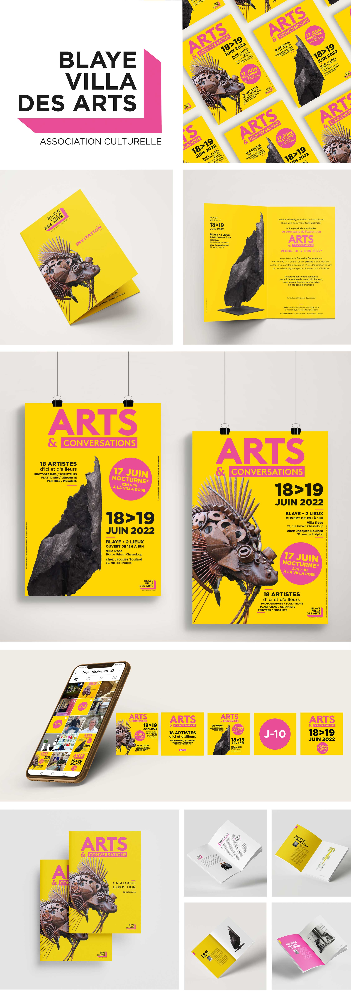

Blaye Villa des Arts
> Création de l'identité visuelle pour l'association culturelle : Blaye Villa des Arts (33).
> Conception graphique pour l'événement « Arts & conversations » artistes d'ici et d'ailleurs, organisé par l'association, qui est la première édition d'un festival immersif au cœur d'une exposition d'œuvres d'art.
Création des affiches, invitations, flyers, catalogue artistes, bâche expo, vidéos teasing réseaux sociaux…
Je vous accompagne dans la conception de votre identité visuelle et univers graphique qui représente votre événement, vos produits, vos valeurs, votre positionnement...
Pour cela j'élabore une charte graphique composée de différents éléments visuels : typographie, couleurs, illustrations... L'objectif est de s'appuyer sur une ligne artistique et de s'y référer. C'est un point essentiel pour la mémorisation et la notoriété de votre marque ! Tout cela permet une cohérence graphique et une meilleure reconnaissance par les consommateurs !